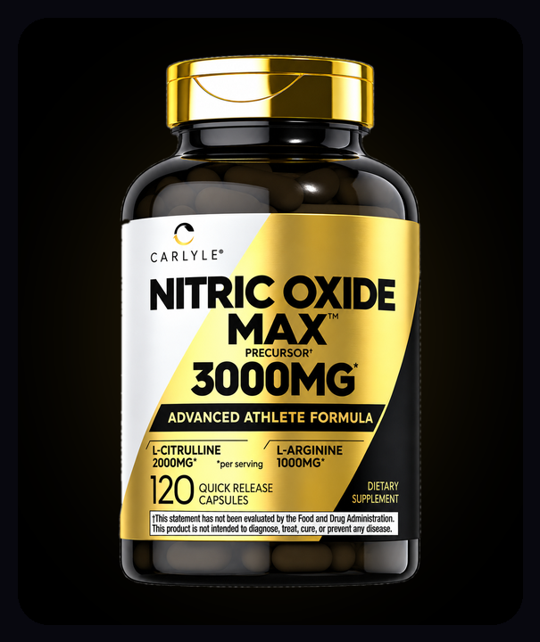

What it does, how the two ingredients differ, and what Godwin uses

Nitric oxide gets a lot of attention in fitness and wellness circles. It isn't something you swallow directly: it's a molecule your body makes on its own, using amino acids from food. Nitric oxide supplements supply those building blocks. Here's what that means in plain language, and how the two most common ingredients compare.
Nitric oxide is a signaling molecule. One of its best-known jobs is telling the muscles in your blood-vessel walls to relax, which helps blood flow normally. It's also involved in nerve signals and the immune system. Your body makes it from the amino acid L-arginine, and healthy blood vessels produce it all the time.
| Feature | L-Arginine | L-Citrulline |
|---|---|---|
| What it is | An amino acid your body uses directly to make nitric oxide | An amino acid your body converts into L-arginine, mainly in the kidneys |
| Found in food | Meat, fish, dairy, nuts, seeds and beans | Watermelon (the name comes from the Latin for watermelon), cucumbers and melons |
| How well it reaches the blood | Much of it is broken down in the gut and liver before it reaches the bloodstream | Passes through more easily, so studies have found it raises blood arginine levels more steadily |
| Stomach comfort | Larger amounts can cause stomach upset for some people | Generally well tolerated |
| Why combine them | Arginine is the direct building block, and citrulline keeps arginine topped up over time. Many supplements pair the two for that reason. | |
Godwin takes Carlyle Nitric Oxide Max 3000 mg as part of his daily routine, alongside eating better and staying active. In his words, nitric oxide "plays a role in a lot of things your body does. That's why I started paying attention to it."
L-citrulline + L-arginine, 3,000 mg per serving.
See Nitric Oxide Max on AmazonGodwin's personal experience. Results vary from person to person.
This article shares general information and personal experience, not medical advice. These statements have not been evaluated by the Food and Drug Administration. This product is not intended to diagnose, treat, cure or prevent any disease.
Nitric oxide is a signaling molecule your body makes. One of its best-known jobs is helping the walls of blood vessels relax, which supports normal blood flow. It is also involved in other processes, such as nerve and immune signaling.
They work together. L-arginine is the amino acid your body uses directly to make nitric oxide, but much of it taken by mouth is broken down before it reaches the bloodstream. L-citrulline is converted into L-arginine in the body, and studies have found it raises arginine levels in the blood more steadily. That is why many supplements, including the one Godwin uses, combine both.
Anyone who takes blood pressure medicine, nitrates such as nitroglycerin, or erectile dysfunction medicine, has low blood pressure, is pregnant or breastfeeding, or has a health condition should check with a doctor or pharmacist first.
Also see: SunFiber GI vs Benefiber vs Metamucil · All of Godwin's supplements